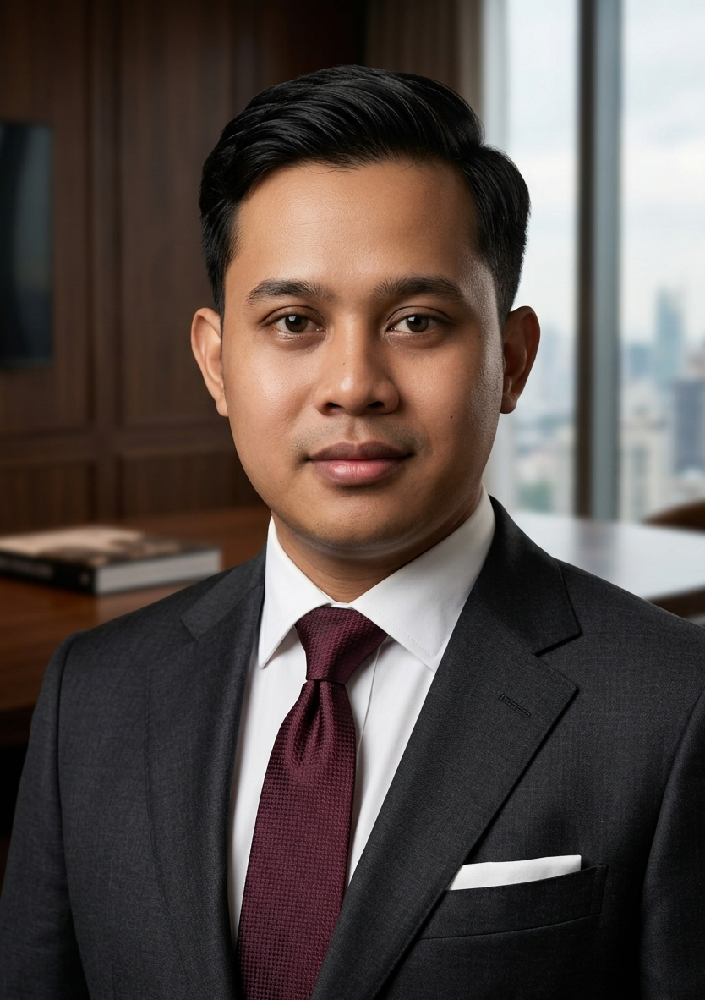

Koordinator Order Management • Profesional Maritim
Profesional logistik dan maritim dengan lebih dari 5 tahun pengalaman...
Politeknik Maritim Negeri Indonesia
Sep 2016 – Agu 2019 | IPK: 3.22
Universitas Terbuka
Jan 2025 – Sekarang | IPK: 3.22